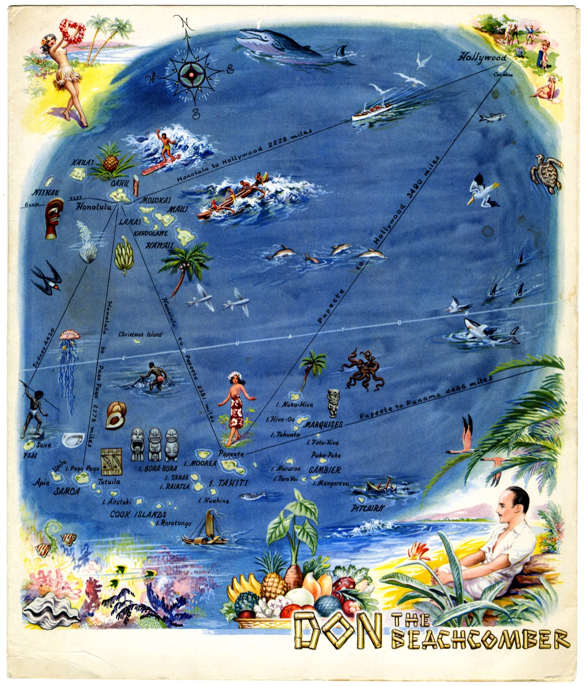
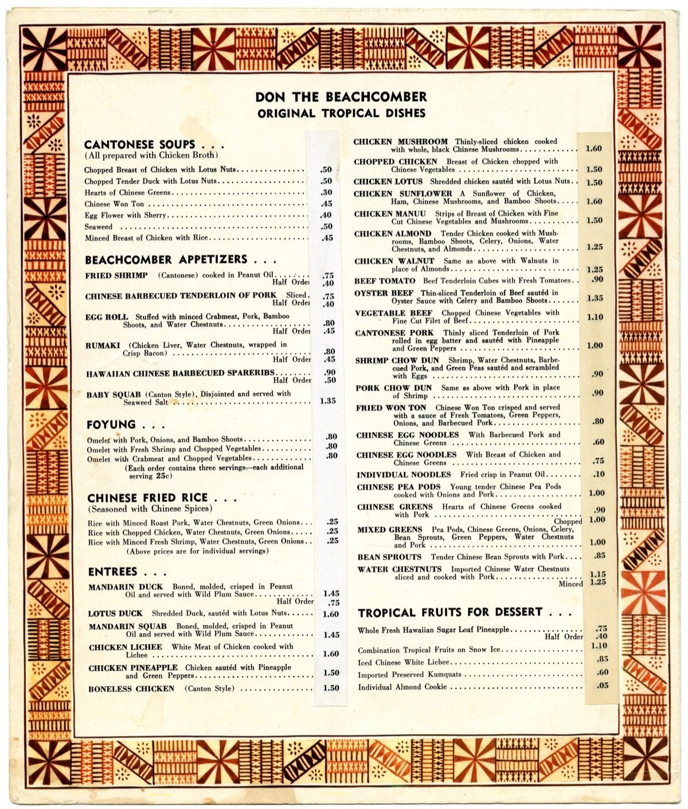

A copyright renewal search, and its result, recorded against the physical item held at Stanford.
The 1941 copyright was not renewed. The work has been in the public domain in the United States since 1 January 1970.
Published in the US in 1941 bearing a valid copyright notice, the menu received a 28 year initial term under the 1909 Act. Renewal was an affirmative filing due in the 28th year, during 1968 or 1969. No renewal registration exists in either of the two record sets that would contain one.


All rights reserved in all countries. Reproduction in whole or in part prohibited. Copyright, 1941, Don the Beachcomber.
Cornell's public domain chart states the rule for this row, published 1931 through 1963, with notice, copyright not renewed, as: "None. In the public domain due to copyright expiration."
A menu could have been registered as a pictorial work or as a pamphlet, so both classes were searched. The final row is a control: it confirms the corpus actually contains renewals originating in 1941, so the zeroes above it mean absence rather than a gap in the transcription.
| Record set | Scope | Window | Terms | Result |
|---|---|---|---|---|
| CCE Artwork Renewals 1965–1977 Project Gutenberg #70611 |
Works of art, scientific and technical drawings, photographs, prints and pictorial illustrations. Classes G, H, I, J, K | All four half-year volumes, 1968 + 1969 | Beachcomber · Beach comber · Gantt · Sund · Sunset Corp · tiki · Polynesian · Trader Vic · Bergeron | 0 hits |
| Stanford Copyright Renewal Database | Books and pamphlets, Class A | All renewal years | "don the beachcomber" | 0 hits |
| Stanford Copyright Renewal Database | Books and pamphlets, Class A | All renewal years | "beachcomber" | 2. W. McFee novel (1935); children's book (1960). Neither related. |
| Stanford Copyright Renewal Database | Books and pamphlets, Class A | All renewal years | "gantt" | 4. All W. Horsley Gantt, physiologist. No relation to Ernest R. B. Gantt. |
| Control | Renewals of works published in 1941, inside the 1968 volumes of the same artwork corpus | 1968 | — | 185 present |
Pinocchio with tray. Menu. © 15Nov39; K42741. Walt Disney Productions (PWH); 20Dec66; R398956.
Across the entire 1965 to 1977 artwork renewal corpus, this is the sole restaurant menu. Reading the entry: original registration K42741 on 15 November 1939, renewed as R398956 on 20 December 1966 by the proprietor of copyright in a work made for hire. The renewals that got filed belonged to organisations running standing copyright programmes with the calendar watched. For scale, Stanford's Class A database returns 13 results for "menu" and 20 for "restaurant" across all years and all claimants.
Not a title search from the Copyright Office. OCR and transcription errors are possible in any digitised index.
A renewal filed under a proprietor name not among the terms searched would not surface. Claimant side names and subject terms were both tried.
Different classes, different compilers, same result. That is what raises this from a single silence to a reliable one.
The Copyright Office produces search reports for a fee. That is the instrument that converts strong confidence into a citable finding, should it ever be needed.
Trademark. "Don the Beachcomber" is an active mark that has changed hands repeatedly and is being commercially revived. Public domain in the 1941 artwork does nothing for you on the name. The art is reproduced here as historical record, in an article about the business that printed it. It does not go on our own menu, signage or merchandise, and nothing here implies affiliation.
The institutional slip. The archival envelope carries a printed note reading "Scans are for reference use only. Further reproduction requires permission from the Department of Special Collections, Stanford University Libraries." This is an access assertion, not a copyright claim. Special Collections stated in writing on 2 September 2026 that CHS holds the physical copies only, holds no copyright, and cannot grant or withhold usage permission. Under Bridgeman v. Corel, a faithful flat reproduction of a two dimensional public domain work generates no new copyright in the United States, so the scans carry no separate term of their own. No licence agreement was signed.
Prepared 3 September 2026 for the Swizzle archive. This record states the result of a documentary search and the reasoning applied to it. It is not legal advice.